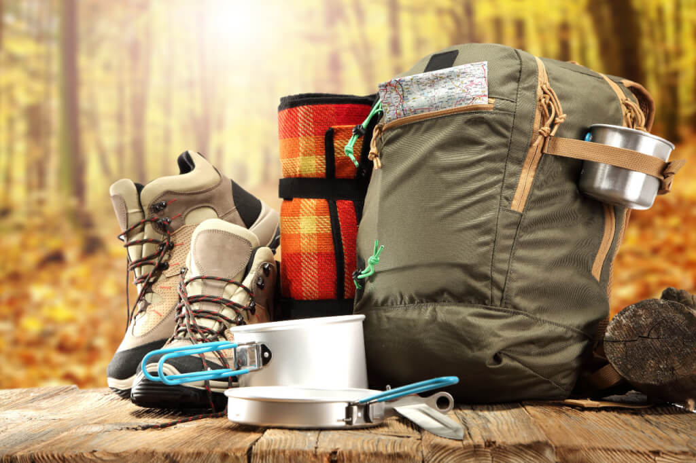

Find a Hiking Partner (s)
If you have friends who hike, ask them to take you on a trek. Most people are happy to share their expertise, let you borrow gear and introduce newbies to their favorite trails.If you don’t know any hikers, many cities and towns have hiking clubs that regularly plan outings. You can find hiking classes, outings and events through REI Experiences. Online groups, such as REI Conversations or MeetUp, are also a great way to find hiking buddies.
Hiking alone: Experiencing the outdoors by yourself can give you a sense of freedom and adventure that are hard to find elsewhere. But it can also be intimidating and lonely at times. If you’re new to hiking, we recommend finding a companion to keep you company. That person will also be there to lend a hand if you happen to get hurt. If going alone really is your only option, then start out with short trips to popular hiking destinations and make sure someone always knows where you’re going and how long you plan to be gone.
Choose a Hiking Route
Before you start your search for the perfect hike, it’s helpful to think through a few things, such as:
How much time you have: Do you have a couple hours or a full day? The amount of time you have can determine where you go. Don’t forget to factor in how long it takes to get to and from the trailhead.
Your fitness level: Honestly assess what kind of shape you’re in. You want to have an enjoyable time out there rather than suffering through a long, strenuous hike that you’re not prepared for. If you’re not in the shape of your life, don’t be dismayed: There are hikes for everyone. Read more fitness tips in our article on How to Train for Hiking.
Distance: Think about how many miles and hours you’re comfortable hiking. An average walking pace is about 3 mph, but your hiking pace may be slower than that depending on terrain, elevation gain and how much weight you’re carrying on your back.
Elevation gain: The amount of elevation gain on a hike is one factor that determines the difficulty. With a little experience, you’ll come to know how much elevation gain you can comfortably handle and what is too much. For a point of reference, if a trail gains 1,000 feet in one mile, that is considered quite steep. Also, a general recommendation is that for every 1,000 feet of elevation gain, add one hour to your trip.
Time of year and weather: Some trails won’t be accessible in early spring because they’re covered in snow. If it’s fall and the sun is setting earlier, plan accordingly so you’re not caught out after dark unexpectedly. Always check the weather forecast before heading out so you can dress and pack appropriately.
Logistics: Certain hikes require a bit more planning. For instance, if you end up doing a hike that starts and finishes at different places, you’ll need to shuttle cars to your start and end points.
Choose Your Hiking Gear
One of the wonderful things about hiking is that you don’t need a bunch of high-tech gear to get out there. With a few essential items for the trail and a sense of adventure, you’re ready to head into the wilderness.
The Ten Essentials
Start by making sure you’re carrying the Ten Essentials. This is a collection of gear and clothing that all hikers should carry whenever they step onto the trail. The collection includes items for navigation, sun protection, insulation, illumination, first aid, fire, repairs, nutrition, hydration and emergency shelter. Learn more in our article about the Ten Essentials.
Hiking Footwear
Footwear is one of the most important items you need to choose, and it’s a very personal choice. Some hikers prefer supportive over-the-ankle boots, while others enjoy lightweight trail-running shoes. The terrain you’ll be walking on can also affect your decision. Lightweight, low-cut hiking shoes may be fine on well-maintained trails without a lot of obstacles, whereas sturdy boots may serve you better on a rugged trail with rocks, roots and streams. Read about some of our favorites in Best Hiking Boots.
Whatever you choose, make sure the boots or shoes are well broken-in and comfortable for long distances. And wear wool or synthetic socks, not cotton.